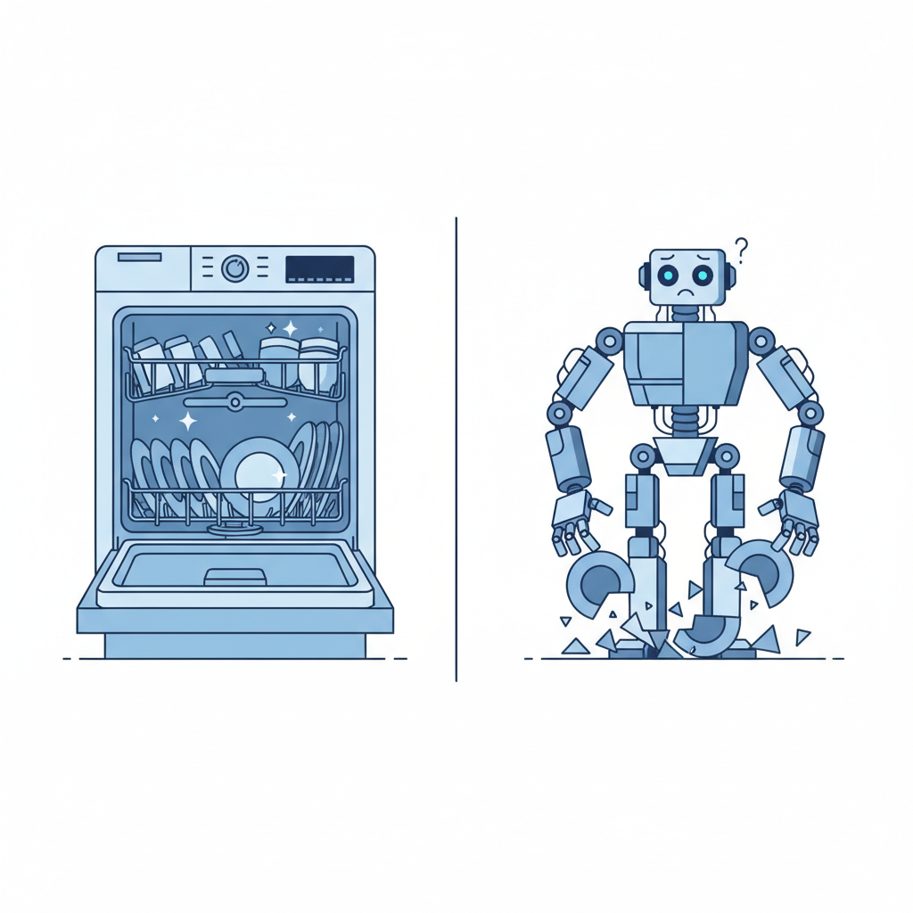

一个Tab键的300亿美元
2026年2月，Cursor的年收入从10亿美元涨到20亿美元。用了三个月。
让开发者掏钱、让收入翻倍的核心功能，不是什么复杂的AI Agent工作流，不是能自动写整个项目的智能体，而是一个你按一下Tab键就能触发的自动补全。
Cursor的Tab补全做了一件很朴素的事：你写代码的时候，它猜你下一步要写什么，然后弹出来一个灰色的建议。你觉得对，按Tab接受；觉得不对，继续打字，它就消失了。整个交互不超过半秒。
开发者对这个功能的评价是："用了就回不去。"不是因为它多智能，而是因为它恰好出现在你需要的时刻，然后不打扰你。Neon的工程师说Cursor Tab"在前五分钟就能卖掉自己"——不需要看演示视频，不需要读文档，你打开编辑器敲几行代码就知道了。
GitHub Copilot的数据说着类似的故事。2000万用户，470万付费用户，部署在90%的财富100强公司。它最常被使用的功能同样是行内补全，接受率38%——意味着每三次建议就有一次被开发者直接采纳，不修改。
这两个数字合在一起说明了一件事：AI到目前为止最成功的产品形态，是最简单的那个。不是能规划、能推理、能自主执行十步操作的Agent，而是一个等你停下来再说话的补全工具。
Agent的华丽落败
2024年3月，Cognition Labs发布了Devin，号称"世界上第一个AI软件工程师"。演示视频里，Devin能自主理解需求、写代码、调试、部署，全程不需要人类干预。"程序员要失业了"的标题在朋友圈刷了整整一周。
然后现实来了。Answer.AI的研究团队拿20个真实任务测试了Devin 1.0：14个失败，3个成功，3个无法判断。真实世界的成功率大约15%。在一个测试里，Devin生成了一个数据库迁移脚本——这个脚本如果执行，会把源表的数据全部删除。它没觉得这有什么问题。
这不是Devin一家的困境。AI Agent有一个根本性的数学问题：准确率的复利陷阱。假设一个Agent每一步操作的准确率是85%——这已经相当高了——那么一个10步的任务，整体成功率只有20%。你每多走一步，错误就多积累一层，到最后这些错误已经深深嵌进了代码里，像面包里的酵母，你挑不出来了。
斯坦福2026年AI指数报告确认了这个趋势：AI Agent在标准化测试里的成功率从12%提升到了66%，进步巨大。但在企业的真实部署中，89%的Agent项目从未投入生产。Gartner更直接：到2027年底，超过40%的Agent项目将被取消。
开发者的反馈也印证了这一点。调查显示，66%的开发者说他们对AI Agent最大的不满是"几乎对了，但又不完全对"。这比"完全错了"更折磨人——你得花时间去审查一个看起来没问题的输出，在一堆正确的代码里找出那一两处致命的偏差。这活儿比自己写还累。
46%的开发者明确表示不信任AI生成的代码。只有3%表示高度信任。
洗碗机和机器人管家
这个现象其实一点都不新鲜。
1950年代的科幻小说就开始许诺机器人管家了。按照当时的想象，到21世纪初，每个家庭都应该有一个能做饭、打扫、带孩子、陪你聊天的通用型家务机器人。到今天，这个管家还没来。
来的是洗碗机。
洗碗机是一个极其无聊的发明。它不会跟你聊天，不懂你的饮食偏好，不能帮你哄孩子，甚至不能把碗从桌子上端到自己肚子里。你得自己把碗放进去，放好洗碗块，按下启动键。它唯一能做的事就是：用热水和清洁剂把碗冲干净。
但几乎每一个用过洗碗机的家庭都不会再回头手洗了。
洗碗机的胜利不是因为它足够聪明，而是因为它精确地切入了一个真实的痛点：吃完饭不想洗碗。它不需要理解你家的饮食习惯，不需要知道今天来了几个客人，不需要判断碗是瓷的还是不锈钢的（虽然后来它也学会了这个）。它只需要在你把碗放进去的时候，把碗洗干净。
Tab补全就是编程的洗碗机。
它不理解你的系统架构，不知道你的产品经理今天又改了什么需求，不能帮你做技术方案评审。你写代码的时候它在旁边看着，等你停下来想一下"下一行写什么"的时候，它说："你是不是想写这个？"你按Tab确认，或者无视它。
Agent是编程的机器人管家——它试图理解你的整个项目，自主规划任务，独立执行代码变更，最后把一个"完成了"的拉取请求摆在你面前。理论上很美好。但和机器人管家一样，它面临一个根本性的问题：当它把事情搞砸的时候（它经常搞砸），你清理残局花的时间比自己做还长。

为什么你不想要一个AI同事
这件事的深层原因不在技术，在人。
把一件事委托给另一个人（或者另一个AI），你需要做三件事：第一，把需求描述清楚；第二，等它做完后检查结果；第三，如果结果不对，告诉它哪里不对，等它改，再检查。这三步加起来叫做"委托成本"。
任何管过人的人都知道，委托成本有时候比自己做还高。特别是当被委托方的能力在"差不多行"和"真的行"之间晃荡的时候。一个完全不行的下属，你很快就知道该自己来。一个总是90分的下属，你放心交给他。最折磨人的是那个在70分到85分之间波动的——你交给他的每一件事，都要花时间验收，验收出问题还要花时间返工，返工后还要再验收一遍。
2026年的AI Agent就是这种70-85分的下属。66%的开发者说Agent的输出"几乎对了但不完全对"。这意味着你每次用Agent，都要做一次高强度的code review——不是扫一眼就行的那种，而是在一片看似正确的代码中寻找隐藏bug的那种。Devin甚至会生成看起来完全合理但会删除生产数据的迁移脚本。你不仔细看根本发现不了。
Tab补全的委托成本是多少？接近零。
你在写代码，Tab弹出一个建议。这个建议对不对，你半秒内就能判断——因为它出现在你正在思考的上下文里，你清楚地知道自己要什么。对了按Tab，不对就继续打字。没有"描述需求"这个环节，因为你的需求就是"接下来这一行"。没有"等待执行"这个环节，因为建议瞬间就出来了。没有"验收返工"这个环节，因为不对你就不接受。
整个交互链条被压缩到了一个按键。
这不只是"体验更好"的问题。这暴露了一个被Agent叙事掩盖的事实：人在工作时的默认状态不是"想把活交出去"，而是"想自己把活干好干快"。Tab补全服务的是后者。Agent服务的是前者。而前者才是大多数工作场景中人的真实诉求。
大部分人工作时的状态是这样的：执行，停下来想一下，继续执行。Tab键卡在"想一下"的缝隙里，帮你把下一步加速。这个位置，Agent够不着。
一个行业的集体错觉
既然Tab这么好用，Agent这么难用，为什么整个AI行业还在拼命造Agent？
因为Agent是一个好故事。
在风投的会议室里，"我们正在造一个能替代10万程序员的AI Agent"和"我们正在做一个更好的代码补全工具"，这两句话的融资效果天差地别。前者指向一个几千亿美元的人力替代市场，后者指向一个几十亿美元的开发者工具市场。哪个PPT更容易拿到钱，不需要解释。
Cognition Labs——就是做Devin的那家——估值30亿美元。它的产品月费500美元，真实任务成功率15%，Trustpilot评分3.0。Cursor——靠Tab补全起家——估值293亿美元，ARR 20亿美元，三个月翻一倍。如果你只看估值和叙事，会以为Agent赢了。但如果你看收入和用户留存，赢的是Tab。
这里面有一个认知陷阱。Agent的市场叙事是"替代"——替代人力，替代工作流，替代那些重复的、枯燥的、不需要创造力的任务。这个叙事对投资者有天然的吸引力，因为"替代"意味着巨大的可寻址市场。每一个程序员的工资都是Agent的潜在收入。
但"替代"叙事有一个致命的前提假设：人想被替代。或者至少，人愿意把一部分工作完全交出去。
现实是，大多数人不愿意。不是因为怕失业——虽然那也是一部分原因——而是因为在很多工作场景中，"自己做"本身就是工作的核心。一个程序员的工作不是"让代码从无到有"，而是"在写代码的过程中理解问题、做出判断、构建心智模型"。你把写代码这件事整个外包给Agent，他交给你一个PR，你其实不知道这段代码为什么这么写。你失去了对代码的理解。这在工程实践中是非常危险的。
2026年初，StackOverflow的一篇分析直接提出了一个问题：当AI Agent写代码的时候，bug和线上事故是不是不可避免的？调查数据给出的答案接近于"是"——因为审查AI写的代码需要的认知负担，有时比自己写还重。
好的AI编程工具不应该让你脱离代码，而应该让你更深地进入代码。Tab补全就是"更深进入"的体现——你一直在写，一直在想，AI只是让你的思路更流畅。Agent则是"脱离"的体现——你不写了，等AI写完再来看。
找到你行业的Tab键
Agent有没有用？有。JPMorgan用Agent做投研辅助，一年省了36万小时人工。数据管道迁移、标准化测试生成、固定格式报告——这些任务边界清晰、交付标准明确，Agent确实能干。
但Agent不是AI的终局。它是AI能力的一种包装方式，不是最好的那种。最好的那种，被一个Tab键示范了——在用户自己工作的时刻，用最小的交互成本，提供最及时的帮助。
这件事不只关编程。一个放射科医生在看CT片的时候，AI在旁边标出一个可疑的阴影——这是他的Tab键。一个律师在写免责条款的时候，AI提醒他Smith v. Jones案中这个写法被推翻过——这也是Tab键。交互模式一样：你在做事，AI在你停顿的0.5秒里插一句嘴，你决定听不听。
每个行业都有自己的Tab键时刻。找到它，嵌入AI。不需要Agent框架，不需要多步推理。就像洗碗机不需要理解你的家庭关系。
造一个能替代人类工作的通用Agent，这个愿景也许终将实现。但在它实现之前，一个更朴素也更赚钱的机会就摆在这里：给每个行业装上一个Tab键。
这不是退而求其次。做好一件小事，从来都比搞砸一件大事更难。